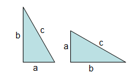

Definition: Triangles are similar if all three sides in one triangle are in the same proportion to the corresponding sides in the other.
This (SSS) is one of the three ways to test that two triangles are similar . For a list see Similar Triangles.
If all three sides in one triangle are in the same proportion to the corresponding sides in the other, then the triangles are similar. So, for example in the triangle above, the side PQ is exactly twice as long as the corresponding side LM in the other triangle. PR is twice LN and QR is twice MN. All three sides are in the same proportion, in this case 2:1 (two to one), and so the triangles are similar.
It doesn't matter what ratio it is (it could have been, say, 5.3 : 1). But so long as it is the same ratio for all three side pairs, the triangles a similar.
Notice the three side lengths are shown in a magenta color, to show that these are the things being used to test for triangle similarity.

Similar triangles can be rotated and/or mirror images of each other (reflected). (See Similar triangles.) In the figure above, the two triangles have all three corresponding sides equal in length and so are still similar, even though one is the mirror image of the other and rotated.